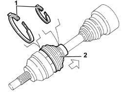
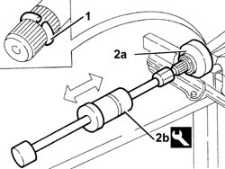

2710A20 wheel end constant velocity joint (one), l/h or r/h - r + r with drive shaft removed - includes boot replacement
- Path
- Procedures > 27 AXLE > 2710 FRONT AXLE > 2710A drive shafts and joints > 2710A20 wheel end constant velocity joint (one), l/h or r/h - r + r with drive shaft removed - includes boot replacement
- Kind
- repair procedure (removal / refitting; the operation number is the code)
- Applies to
- all engines; all production periods
- Interactive page
- https://sloeber94.github.io/elrnDB-a156/en/#/3238020
Applies to: all engines; all production periods
 Removing
Removing
 Refitting
Refitting1. Using a chisel, stake the nut collar twice, as illustrated.
2. Push the boot back.

Applies to: all engines; all production periods
1. Tighten the circlip fixing the wheel side constant velocity joint as much as possible.
2. Remove the constant velocity joint, wheel side, (2a) using the tool (2b).
 | Name | Country |
|---|---|---|
2b | Counter weight | 1.821.161.000 |

Applies to: all engines; all production periods
Remove the circlip locking the constant velocity joint, wheel side.
Remove the boot.
Applies to: all engines; all production periods
Refitting
RemovingIf necessary, renew the grease inside the wheel side constant velocity joint.
 | Type | Component | Name | Qty. |
|---|---|---|---|---|
- | Grease (g) | WHEEL END CONSTANT VELOCITY JOINT | TUTELA STAR 500 | 120 |
Fit a new boot.
Fit a new circlip locking the constant velocity joint, wheel side.
Fit the constant velocity joint, wheel side.
Fit the boot in its seating and secure it with the bands.